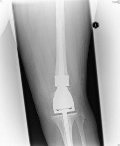
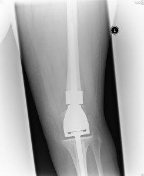

Hi there!
From Costa to hospital…back blogging! (Can I just point out that I prefer Starbucks but it’s further to go on my crutches to get there! Let’s start the Costa V Starbucks vote…comments welcome!) Since my last entry it’s been a bit of a rollercoaster of ups and downs. I would have been back on here sooner but still with no internet at home and trying to fill my last few days of freedom, it didn’t happen! I had a few more days ‘at home’ but Thursday was mostly spent going to Physio at Frimley Park Hospital but that was with a very nice young man who was very helpful and encouraging! & I did manage to catch up with my Aunt & my Nana who were at Frimley Park at the same time! Then we also popped into my sister’s and it was lovely to see her and my 3 nieces as always. Apart from I put my crutches right down to the smallest they would go so Eden (7) could have a go and then they got stuck and we couldn’t get them back up again! Oops! I thought I’d have to stay on Thalia’s sofa forever but luckily she got them back up again eventually! Thanks Thalia! They came round the weekend before and Anna and I made some cupcakes and we let them decorate them with chocolate butter icing and all sorts of sweets…
Buttons… Smarties … Maltesers… Percy Pigs from M&S (love them!) It was hilarious watching them decorate them and piling on the sweeties! They never fail to cheer me up and make me happy! Then after being there all afternoon, Daisy (4) looked at me and said “Why are you on crunches anyway?!” “For my leg remember!” I replied…followed by “Oh yeah!” Haha, so they’re now known as crunches! I love how they’re so innocent and so adaptable, they just take it all in their stride and accept all these strange things happening to me! Although they do much prefer to see me in my wig than bald! & Zara (2) gets scared and holds onto her hair as if we’re going to try and take hers off!!
Anyway back to the point…I could tell stories about them all day! Chris and I went out for a lovely meal on Thursday evening as we knew it’d be a while before we could again. So a good feed prepared me for the Friday ahead and my appointment with Prof. So although Friday was a ‘good’ day it was spent in hospital also! I knew it’d be a big discussion due to the fact that I went neutropenic again last time even though he had said it’d be much less likely. & after my Prof in Frimley had been so matter of fact about my life being at risk everytime that happens, I knew we’d have to have a thorough conversation about what’s to happen next. I didn’t quite bank on it being quite as heavy though and it was just so much information to take in and conversations I knew I’d have to have at some point, stuff you need to hear but don’t necessarily want to…
Basically he started by saying that if I want to I can have the chemo administered at a private hospital in Guildford, to be closer to home. I would be under the care of my Prof from Frimley (Professor Smith) and would still visit Oxford every 3 weeks for clinic and review with Prof (Professor Hassan – my hero!) Obviously this would have it’s benefits but I’m not so sure about changing at this stage as although coming to Oxford has it’s drawbacks, at least I know what to expect and know lots of the staff and feel on the whole that I can trust them. I don’t know if I want to start all over again at this stage. He could see this doubt in me and I expressed to him how I felt about it and he said if I wanted to I could have an extra week of feeling ‘better ish’ to think things through before proceeding chemo. I very quickly said no. Although I would’ve loved more than anything to have an extra week at home before going through this again, I’d have just been delaying the inevitable and I’d rather carry on as planned and see this thing through as best I can. I’m psyched up to do it mentally, it’s just the question of whether my body can survive it and the hardest thing is that I have no control over what my own body is doing.
He then went on to say my recent CT scan on my chest was fine in terms of my heart’s still ok, but “Do you know you’ve got gall stones?!” “Urm, no!” At this point I’m thinking, for goodness sake, when will this end!! He said they’re relatively small at the moment and lots of people have them and don’t know about them, just to keep an eye out for any symptoms and I may need to do something about them at some point. But not a priority at the moment! So back to the more pressing issues, he made it clear that in this stage of the ‘game’ I have a red button in front of me at all times and if I want to stop chemo now, then I stop. Again I said no extremely quickly. Some of you might be thinking I’m mad and surely that’s what I want? Well of course I would love more than anything to stop but it’s not as simple as that. If they plan to give me 14 sessions, I want to have as close to 14 sessions as I can…I’m not going through all I’ve been through to stop early if I can possibly help it. Which is why I have such mixed feelings about what he told me next…they’ve reduced the dosage of 2 of the chemo drugs by 20% for the round I’m on now. If I still go neutropenic next week (for the 8th time in a row) then they’ll have to stop. I think I felt more scared at that point than I have through all of this. Again that might sound silly to you but it’s the prospect of stopping before they want me to and the fear of the cancer coming back. But I have to listen to them and it’s their job to weigh up and strike a balance between the risks and the benefits and if they’re telling me it’s getting too dangerous and my life is at risk from the neutropenia more than it could potentially be from the cancer then I have to listen to them and go with it. This then went on to the inevitable discussion of survival rates with my cancer and likelihood of cancer returning. He explained it very clearly although it’s still hard to get your head around! Basically the highest risk period of cancer returning is the first 5 years, and within that the first 2 years is the most at risk time. From everyone who has Ewing’s Sarcoma, 60% will be ok and 40% will not (cancer will return within the first 5 years, some treated successfully, some sadly not) From people who’s cancer had spread on diagnosis, only 10-20% will be ok in the first 5 years and 80-90% will not. Luckily for me I’m not in that group as it was caught fairly early and had not spread. I can’t help thinking of all those poor people who aren’t as lucky. My group is the best (but the best of the worst I guess!), where 75% are ok and 25% are not. He said in simple terms you can expect for 1 in 4 people in my category will get cancer return in the first 2 years. I know compared to the other figures that’s positive, but compared to ‘normal’ (whatever that is!) it’s pretty scary and to see it in black and white and to be told it straight up is a pretty scary prospect. Usually if the cancer returns it’s most likely to be in the lungs, which is why I’ll have regular checks and scans to monitor this.
When the chemo ends, whether that’s February or in the next few weeks or somewhere in between, I’ll have to have radiotherapy. He said the plan isn’t definite yet as they discuss these things in large teams, but it’ll probably be everyday for 3-4 weeks. This is in case any cells have been left around the area where the tumour was so the radiotherapy will be concentrated on that area. But of course as with anything, there are risks involved. I knew radiotherapy can make you tired, can damage skin and sometimes make you feel poorly but from what I’ve heard it’s nowhere near as bad as the effects of chemo and I cannot imagine anything being worse than that! But the risks he had to tell me about were much more than just these symptoms. He said radiotherapy there, because it’s focused on where the prosthetic (the metal) has been put in, it can loosen the bone around the prosthetic and can damage the prosthetic. Great, it’s just been put in! & more scarily, there’s new research starting to find that radiotherapy on joints can make it more likely for a different type of cancer to return in that same place in years to come, like when I’m 60 or 70. He said due to all these things, some people choose to say no to radiotherapy. I’m sure I need and will get more information before making my decision as I’ve got to get through the chemo first, but the way I see it, if it’s less likely for cancer to return again in my 20s, but more likely to get it when I’m 60 or 70 then I’ll have it and at least live some of my life first! It’s not as simple as that of course. But then like my dad pointed out, they have to tell you absolutely everything and it’s very new research and we could be talking about very small risks, they just have to inform you.
The other thing that really scares me, which might also sound stupid, is finishing treatment and returning to ‘normal’ life. All I’ve known, for what seems like so long now, is being a cancer patient and being in and out of hospital and just getting through each day at a time. Obviously I’m excited about getting my life back but it seems so daunting and I feel lost thinking about it. I know I’m not alone in this from the few cancer patients I’ve got contact with and from reading Lance Armstrong’s book (a fantastic read FYI, an amazing story and he survived against all odds. It was so good for me to relate to and very inspiring – although everyone keeps telling me I am and I don’t feel I am!! Maybe my book will be out there one day!) Anyway, he says, when his treatment’s over ‘I don’t have cancer but I don’t not have cancer’ and he found that really hard to deal with at first and had no interest in anything. I can relate to that cos it’s not just as simple as one day it’s gone. I guess that’s something I never really thought about before or understood. They can think it’s gone but at the end of the day it only takes one cell to start multiplying again and it can be back. It’ll be so hard not to be paranoid about every little ache and pain and with so many checks in those first few days not to worry, worry, worry whilst trying to build my life back up. Anyway, one day at a time still, that’s the only way I think as you just don’t know what’s around the corner! …apart from planning holidays – that’s a must!
There was more info from Prof but I think you’ve had enough to take in (as I did!) so here’s for some more light-hearted stories! I wore my ‘Maria’ wig on Friday (name after Maria from Corrie! But more like how she used to have it, with more highlights but brown, long, gorgeous curls) I thought it might be fun to confuse them (Goose’s idea!) and it did! The nurses apparently were looking for me in the waiting room and couldn’t see me cos didn’t recognise me! Then the research nurse thought she’d walked into the wrong room when she saw me in there! They were expecting blonde and pinkness!! Then during our meeting I managed to hold it together but at one point I had a few tears when I was trying to get my words out when talking about survival rates. It was literally 2 tears but my fake eyelash (I’ve lost my eyelashes now) decided to hang off! So in the middle of talking life and death, I was holding my eyelash on and Prof was offering me some glue! I said I didn’t think Pritt Stick would do it but luckily I had my eyelash glue in my bag (well prepared!) …so there he is discussing all these serious matters & I’m standing at his mirror gluing my eyelash back on!! Then I got home and had to tell Chris everything I’d been told as unfortunately he’d had to work so couldn’t come to my appointment. So that opened the floodgates and it was a lot more than 2 tears! He was giving me a hug and took something from my cheek and said “There’s a feather on your face!” Then held it up…it was no feather, it was my flippin eyelash! At least your mascara doesn’t run when you cry but I think the whole things falling off may be worse!
Anyway despite all the worry I managed to enjoy my weekend with a trip to the cinema with Anna Friday night (the film was quite sad…not what I needed! Oh well!) then we spent until about midnight looking around Tesco, me on my crunches(!) looking at clothes, home stuff, all sorts! We’ve changed! From bars and clubs to Tesco! Anna was a great support and we talked through everything and she helped me as always…I’m sure it must be boring her by now but she assures me it’s not!! It wasn’t until I got home and stopped and tried to sleep that everything I’d been told was hitting me and I just couldn’t sleep or stop crying with so much flying through my head. For me being busy and talking about things are the key so lying quietly in bed trying to sleep is the worst time for me! So the rest of the weekend was spent busy with a few ‘wobbly’ moments! Saturday was very exciting as I went wedding dress shopping with Laura for her first wedding dress trying on session! She looked beautiful in them all, stunning in fact! & I can’t write anymore about that as Bear (Ollie, her fiancée – my IT manager! May be reading this!) As her chief bridesmaid I felt very proud and honoured! Gemma, her other bridesmaid came too and we tried on a few bridesmaid dresses but it’s hard to picture them in the right sizes and right colours, but there were lovely ones to say the least. So that was exciting and then we went for a nice lunch and had a good old chatter as always and talked through all I’d been bombarded with on Friday. Saturday night and X Factor night! Jo your rap/rhyme on here is more appropriate than you’ll ever know in so many ways and it made me laugh and cry all at once! Fantastic as I’ve told you so stop worrying! Saturday night with Simon Cowell it was! (& Sunday!) Ollie & Laura, Gemma W & Chris O came round and the 6 of us watched X Factor (with lots of pausing and rewinding with all the talking!) and had dominos pizza! Perfect night in with me in my woolly hat to keep my bald head warm!
Sunday was another busy day of Chris and I going to ‘look’ at furniture and oops stumbled across some bargains not to be missed and bought a lush corner sofa for our lounge (£600 instead of £2700!! BARGAIN!) It’s coming tomorrow! & a lovely oak dining table with cream leather chairs, should arrive by Christmas so we’ll have lots of dinner parties once I’m ok. I’ve found myself, since Friday, stop saying ‘when I’m better’ as I don’t feel I will be ‘better’. I guess that’s where ‘in remission’ is a funny term – like Lance Armstrong said you don’t have cancer but you don’t not have cancer. A strange in between feeling. Anyway…Sunday, then my brother came round to see my and the house and so did Gemma H. I’m afraid my last blog I think worried her and Lou slightly that I don’t think they’d been there for me or they’d upset me, which isn’t the case at all. I’m sorry if I’ve worried anyone over what I wrote last time – I want to make clear it’s my no means the majority that I feel don’t understand. As I’ve said loads and loads I feel soooooooooooooooooo lucky for Chris, my friends and family and the support network I’ve got and so many people are there for me. It’s definitely the minority who I feel sometimes don’t understand so well but I understand why they may not know what’s going on, cos they’re not as close and don’t see me as much and may not want to risk saying the wrong thing. Everyone deals with things differently and I have to understand that. Not everyone talks non stop about everything like me! & my last blog I needed a rant and like I’ve said before I don’t want to hold back on here. It’s for me and it’s for you so I try to strike a balance between ranting with my doom and gloom but at the same time telling you the funny more light hearted stories as that’s lots of them too! Anyway so it was great to see my bro and to have a proper chat and catch up with Gemma.
So Sunday finished with X Factor (YAY!) What are those twins about??? Hilarious but sooooooo bad! I’m glad Rikki Eyebrow (what is with his eyebrow?!) went out of him and Rachel but I think she’ll be gone soon too. We’ve got a couple of sweepstakes going with our friends where we pick names out of a hat! & also we’ve done Xtra Factor style where we all write down who we think we’ll win and put it in a top secret envelope not to be opened until the final! We’re sad but it’s fun! Then back to reality with packing for hospital and setting the alarm for Monday morning. After waiting aaaaaaaalllllllll day on Monday, over 10 hours, my chemo got started. But there was lots of muddle ups and some drugs had still not arrived so I’ve had it all in funny orders this time. It was looking as though I’d have to stay until tomorrow but ‘the dream team’ (Team Cara/Team Scamp! That’s Prof, his registrar Saka and Research Nurse Anna. All been brilliant and lovely) have just been round and they say they can speed up the Mesna a bit (that’s what protects my kidneys and bladder) so I should be finished by about 6pm tonight and be able to go home…IF all goes to plan, we don’t assume anything anymore, it never runs smoothly in hospitals! Anyway so I haven’t been sick, touch wood, I’m just totally wiped out. My friend Su who lives in Oxford visited on Monday and we had a good catch up and Al visited me yesterday and brightened up the nurses day – “There’s a man here to see you! He’s in a suit! He’s very handsome!” When he came to the door, I cruelly said “Ah no, that’s just Ally!!” Sorry! Was lovely to have a long chat and catch up and I even had the door shut on me as I was making too much noise chatting! Oops! Some things don’t change!
Right I’ve gone on too long…again! Thank you for all my comments, keep them coming!
Lots of love xxxxxxxxxxxxxxxxxxxxxxxxxxxxxxxxxxxxxxxxxxxxxxxxxxxxxxxx


 
